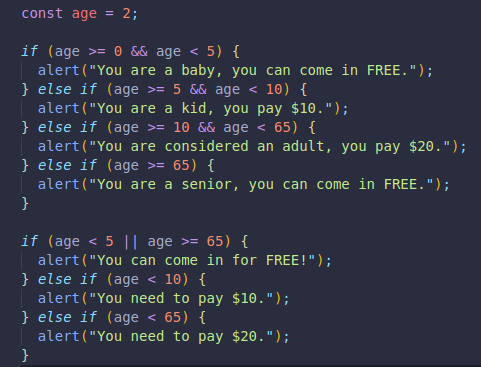
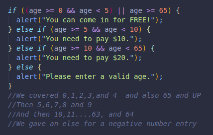

This operator checks to see if at least one of the sides is true, it doesn´t have to be all of them, a single one is enough.
It is represented with two pipe symbols.
true
true
false
We will check for a theme park´s prices with the AND and also with the OR logical operator.
With the first example we used the AND logical operator, it was more specific with the alerts, but longer in code.
We were able to put together the 2 age groups that can come in for free using the OR logical operator.
To make sure no age entered is invalid, we can make sure negative numbers are not included in our logic limits.
It is important to know that the AND operator runs before the OR operator, so parenthesis can help with that, in this case they were not necessary but included for visual understanding in the first condition where both AND and OR were in the same expression.
If we had OR first, and then AND, the code would still run AND first!